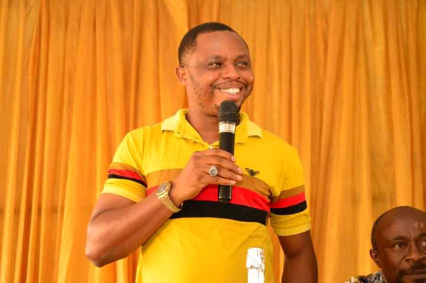

Summary
I am presently a student of colonline-udemy. I learn Progamming and Web Development.
Education
- I have PhD in Software Engineering - from Imo State University (IMSU), Owerri.
- I have Masters in Computer Networks and Security - from Imo State University (IMSU), Owerri.
>- I have Post Graduate Diploma in Information Management Technology - from Fedreal University of Technology, Owerri (FUTO)
>- I have Higher National Diploma in Computer Science - from Abia State Polytechnic,Aba.
>- I have National Diploma in Computer Science - from Abia State Polytechnic,Aba.
Work Experience
- Technologist - Abia State Polytechnic,Aba.
June 12 - Date
- Guide students through hands-on training on web developemnt course.
- Guide students through hands-on training on other programming courses.
Skills
- Teaching
- Programming/Web Development
Hobbies
See my Hobbies
See my contact